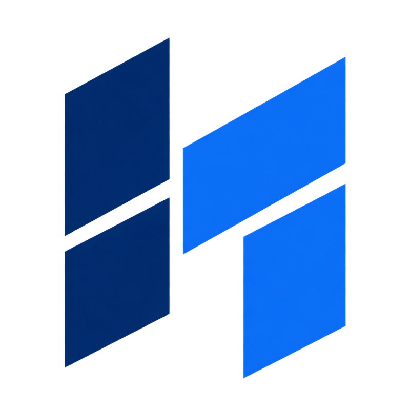

01
업무에 맞는 시스템
업무 흐름과 요구사항에 맞춘
시스템 설계·개발

공공·기업의 업무 환경에 맞는 정보시스템을 설계하고 구축합니다.
요구사항과 운영 환경을 먼저 이해하고,
필요한 범위를 설계해 안정적으로 구현합니다.
업무 흐름과 요구사항에 맞춘
시스템 설계·개발
웹서비스, 관리자 시스템,
업무 플랫폼 구축
내·외부 시스템 연동,
데이터 이관·자동화
시스템 안정화, 기능 개선,
운영·기술지원
정해진 제품을 끼워 맞추기보다,
업무 목적에 맞는 실행 범위를 함께 설계합니다.
민원, 신청, 심사, 승인, 통계 등
공공 업무 프로세스 전산화
업무 포털, 전자결재, 협업·관리 등
조직 내부 업무 환경 구축
API 연계, 데이터 이관,
반복 업무의 자동 처리
검색, 분류, 문서 처리 등
업무 목적에 맞는 AI 기능 적용
분석부터 운영까지 산출물과 검수 기준을 공유하며,
다음 단계의 진행 조건을 명확히 합니다.
업무 현황과
요구사항 정의
시스템 구성과
사용 흐름 설계
개발·환경 구성과
단위 테스트
내·외부 시스템과
데이터 연결
기능·품질 검증과
사용자 확인
안정화와 개선,
기술지원